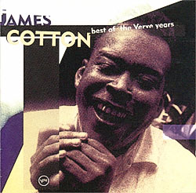

James COTTON "Best of the Verve years".
PolyGram Records, Inc. 1995
 Прелюбопытный материал во многих отношениях… Настоящий подарок любителю джамп-блюза был записан во времена, когда наиболее модный блюз служил подпоркой монстриальным гитарным соло. Кстати, один из великих блюз-гитарных монстров - Майк Блумфилд - выступил продюсером двух из трех альбомов, послуживших основой для этой компиляции. Альбомы выходили на престижной и процветавшей тогда джазовой фирме "Верв", основанной легендарным Норманом Гранцем; что для чикагского блюзмэна представляло уникальный прорыв в "высшие сферы".
В записи альбома принимали участие блистательные музыканты: барабанщики Сэм Лэй и Фрэнсиз Клэй (которые вместе с Коттоном играли в блюзбэнде Мадди Уотерса); саксофонист Дэвид "Фэтхэд" Ньюмэн; аранжировки для духовых выполнены Женом Барджем. Майк Блумфилд так же принял непосредственное участие в записи нескольких треков, вместе с другим участником блюзбэнда Пола Баттерфилда - клавишником Марком Нафталиным.
|